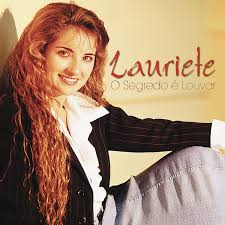

Louvores que tocam a alma
Alterei esta Branch de novo com algo a mais. Algo mais ou menos é algo que nem é exagerado demais, nem é tão simples demais, mas que no final realmente é muito interessante.


Alterei esta Branch de novo com algo a mais. Algo mais ou menos é algo que nem é exagerado demais, nem é tão simples demais, mas que no final realmente é muito interessante.